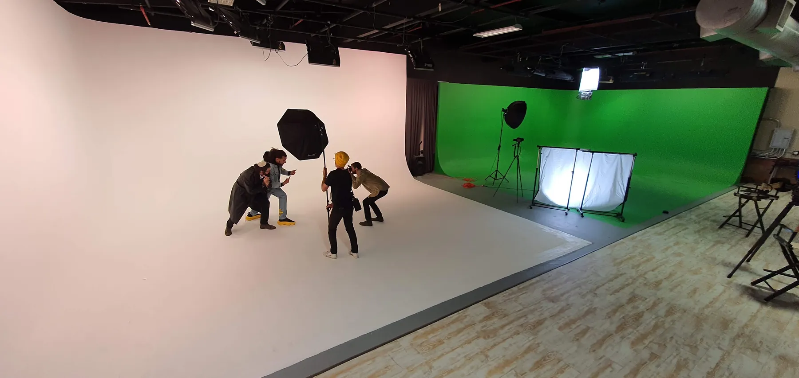
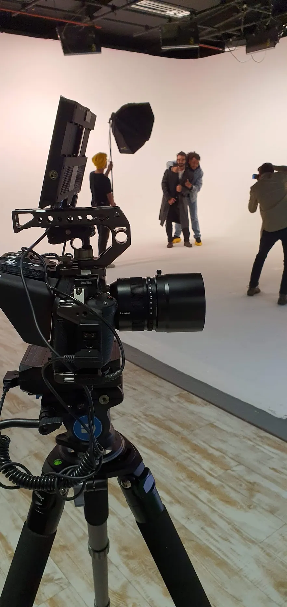
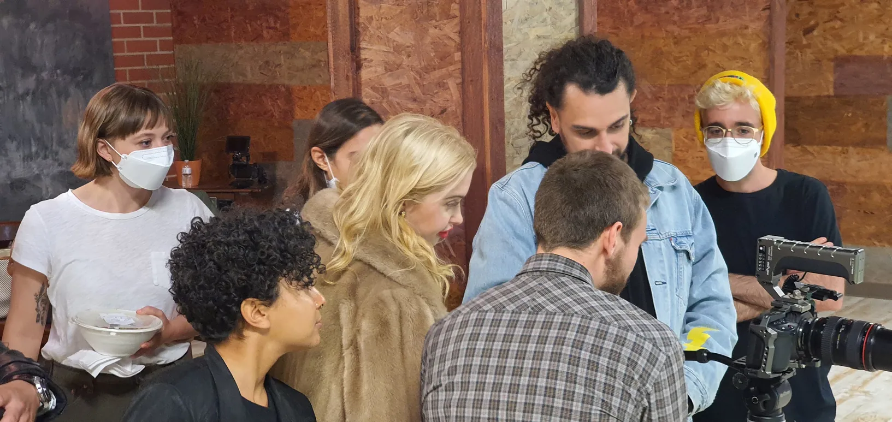
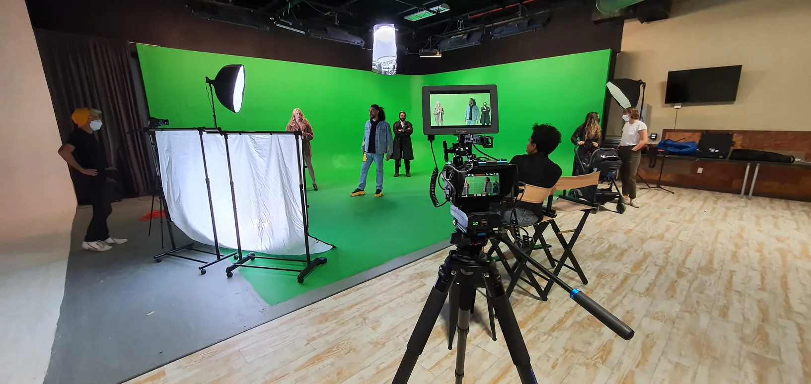
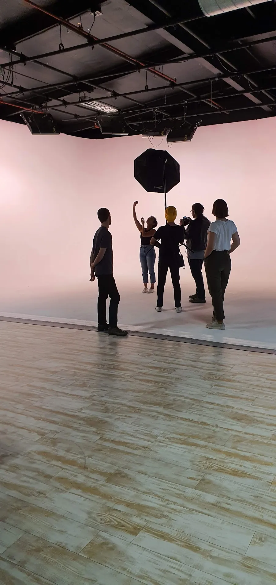
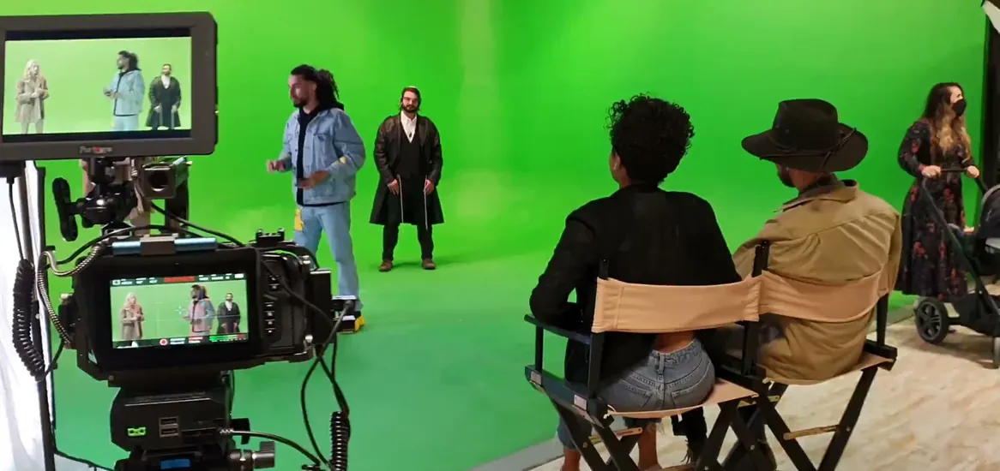
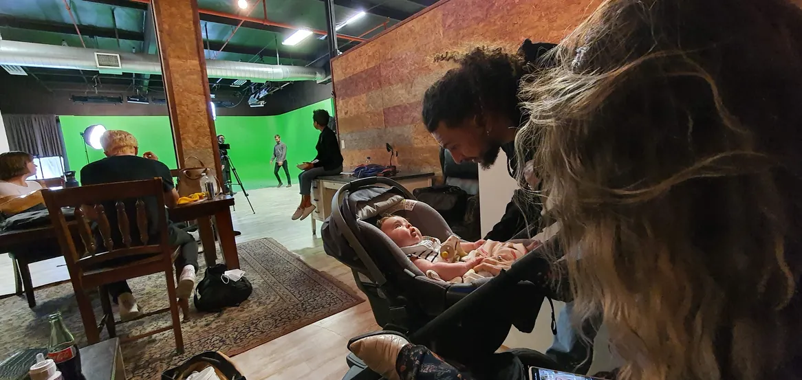

Monsieur — Colorz
A video for the artist Monsieur, shot in a hire studio in Downtown Los Angeles with Ariles de Tizi. A flat-colour performance format copied straight — until the frame widens, the green screen appears, and the whole thing turns into a brawl.
Un clip pour l'artiste Monsieur, tourné dans un studio de location à Downtown Los Angeles avec Ariles de Tizi. Un format de performance sur couleur plate copié au premier degré — jusqu'à ce que le cadre s'ouvre, que le fond vert apparaisse, et que tout parte en bagarre.
A hire studio in Downtown Los Angeles, April 2021, about ten people on the floor. The brief was to copy a format: the single-artist performance against one flat colour, framed dead centre, that a certain music channel had made into a house style. The pale pink cyclorama is the pastiche, shot straight.
Un studio de location à Downtown Los Angeles, avril 2021, une dizaine de personnes au sol. Le principe était de copier un format : la performance d'un seul artiste devant une couleur plate, cadré bien au centre, dont une certaine chaîne musicale a fait une signature. Le cyclo rose pâle, c'est le pastiche, tourné au premier degré.



Except the copy is a set-up. It holds for as long as it takes to be recognised, then the frame widens, the green screen behind it is revealed, and a brawl breaks out across the studio. The whole video exists for that turn — the language is borrowed precisely so that breaking it means something. The idea was Ariles de Tizi's.
Sauf que la copie est un piège. Elle tient le temps d'être reconnue, puis le cadre s'ouvre, le fond vert derrière est révélé, et une bagarre éclate à travers le studio. Tout le clip existe pour ce basculement — le langage est emprunté précisément pour que le casser veuille dire quelque chose. L'idée est d'Ariles de Tizi.




April 2021, so the crew huddle around the monitor with their faces covered and the performers take theirs off to work. It dates the pictures better than any slate would. Ariles de Tizi and Mr. Pinoux joined forces on this one; the director's name has gone from the record and is worth recovering.
Avril 2021 : l'équipe se regroupe autour du moniteur le visage couvert, et les interprètes retirent le leur pour travailler. Ça date les images mieux que n'importe quelle ardoise. Ariles de Tizi et Mr. Pinoux ont joint leurs forces sur ce clip ; le nom du réalisateur a disparu des archives et mériterait d'être retrouvé.